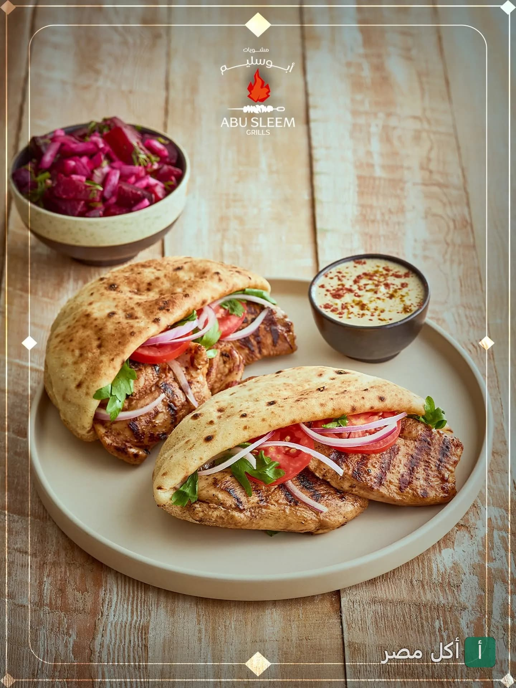

وجبة شيش & كفتة
150 جنيه
مشويات وحواوشي ووجبات على الأصول في فيصل. اختار طلبك من المنيو وكلمنا.

الأسعار بالجنيه المصري من صفحة أكل مصر (آخر تحديث معلن: ٢٦ أكتوبر ٢٠٢٦). أكد السعر مع المطعم عند الطلب. الأصناف المعروضة بدون سعر لم ينشر المصدر سعرا لها.
150 جنيه
170 جنيه
185 جنيه
210 جنيه
230 جنيه
275 جنيه
75 جنيه
80 جنيه
80 جنيه
80 جنيه
90 جنيه
25 جنيه
35 جنيه
35 جنيه
35 جنيه
35 جنيه
Plain Kofta
1 كيلو 550 جنيه1/2 كيلو 290 جنيه1/3 كيلو 200 جنيه1/4 كيلو 140 جنيه
Grilled Kofta
1 كيلو 650 جنيه1/2 كيلو 350 جنيه1/3 كيلو 260 جنيه1/4 كيلو 180 جنيه
Grilled Sujuk
1 كيلو 700 جنيه1/2 كيلو 390 جنيه1/3 كيلو 270 جنيه1/4 كيلو 190 جنيه
Mixed Meat Grill
1 كيلو 850 جنيه1/2 كيلو 465 جنيه1/3 كيلو 320 جنيه1/4 كيلو 250 جنيه
Grilled Steak
1 كيلو 900 جنيه1/2 كيلو 490 جنيه1/3 كيلو 335 جنيه1/4 كيلو 275 جنيه
Grilled Tarb
1 كيلو 850 جنيه1/2 كيلو 465 جنيه1/3 كيلو 320 جنيه1/4 كيلو 245 جنيه
Grilled Kebab
1 كيلو 999 جنيه1/2 كيلو 550 جنيه1/3 كيلو 400 جنيه1/4 كيلو 280 جنيه
2 ربع فرخة + 2 قطعة كفتة + أرز + 2 قطعة سمبوسك + 4 قطع محشي.
1/2 فرخة مشوية على الفحم + 4 قطع كفتة + 9 سجق + 4 قطع شيش + 4 قطعة سمبوسك + 6 قطع محشي مشكل + محشي كرنب.
دجاجة كاملة + 4 قطع كفتة + 4 سجق + 3 صدور مشوية + أرز , تقدم مع 4 أصناف جانبية من اختيارك
2 قطعة استيك + 9 قطع كفتة + 10 سجق مشوي + 12 قطعة فراخ مشوية على الفحم + سمبوسك + محشي + ممبار + أرز عائلي , تقدم مع 4 أصناف جانبية من اختيارك.
100 جنيه
150 جنيه
125 جنيه
150 جنيه
كاملة 330 جنيهنصف 165 جنيه
كاملة 380 جنيهنصف 215 جنيه
كاملة 380 جنيهنصف 215 جنيه
1 كيلو 450 جنيه1/2 كيلو 270 جنيه1/3 كيلو 210 جنيه1/4 كيلو 150 جنيه
1 كيلو 450 جنيه1/2 كيلو 270 جنيه1/3 كيلو 210 جنيه1/4 كيلو 150 جنيه
90 جنيه
100 جنيه
100 جنيه
120 جنيه
توريتلا 80 جنيهبيتي بان 75 جنيهبلدي 70 جنيه
توريتلا 80 جنيهبيتي بان 75 جنيهبلدي 70 جنيه
توريتلا 80 جنيهبيتي بان 75 جنيهبلدي 70 جنيه
توريتلا 80 جنيهبيتي بان 75 جنيهبلدي 70 جنيه
توريتلا 100 جنيهبيتي بان 95 جنيهبلدي 90 جنيه
توريتلا 110 جنيهبيتي بان 105 جنيهبلدي 100 جنيه
10 جنيه
10 جنيه
15 جنيه
10 جنيه
20 جنيه
15 جنيه
Classic Meat Hawawshi
60 جنيه
Meat & Cheese Hawawshi
85 جنيه
Sujuk Hawawshi
85 جنيه
Sujuk & Cheese Hawawshi
90 جنيه
Mixed Meat & Sujuk Hawawshi
95 جنيه
Mushroom Meat Hawawshi
95 جنيه
Pizza Style Hawawshi
100 جنيه
Pastrami Meat Hawawshi
110 جنيه
Roast Beef Hawawshi
110 جنيه
White Rice
30 جنيه
Basmati Rice
50 جنيه
الأصناف والأسعار من صفحة أكل مصر المنشورة. أكد تفاصيل طلبك والسعر مع المطعم عند الاتصال.